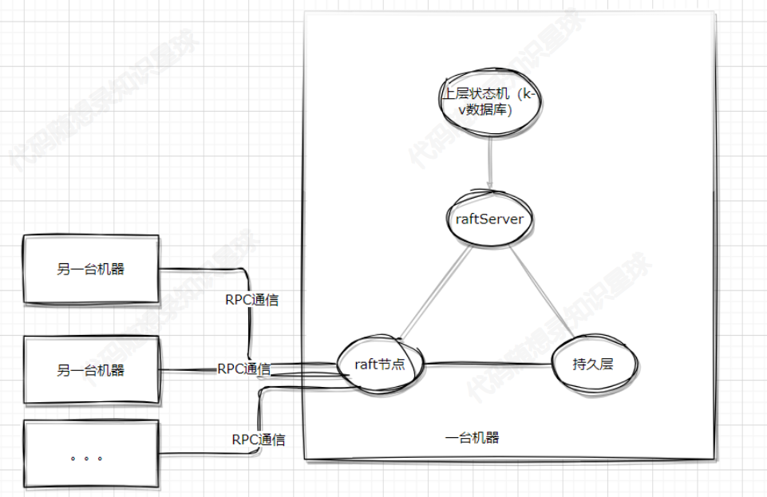
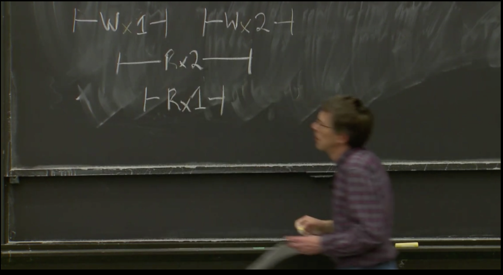

CPPRaft系列-raft重点辅助函数讲解及剩余部分-05
good news！！！!
代码仓库已经可以运行raft集群了，快去试试吧
https://github.com/youngyangyang04/KVstorageBaseRaft-cpp
代码目前不够精简和优雅，拥有很多之前用于其他用途的“废”代码，在接下来的时间我会尝试逐步优化。欢迎大家解决任何一个小问题（甚至是文字问题）或者提出修改意见。
在上一篇文章结束之后，raft的运行的主要原理已经基本掌握。
在理论方面，主要只剩下：线性一致性、持久化的相关内容。
因此剩下的重点就是代码实现了。
在这一篇中，我们会初步搭建起来一个raft集群，具备选举和复制日志的功能。
在这一篇讲解中，因为已经将代码放出，后文如果涉及“在xxx文件中”，那就是在代码仓库的某个文件夹/文件中。
持久化
持久化就是把不能丢失的数据保存到磁盘。
持久化哪些内容？
持久化的内容为两部分：1.raft节点的部分信息；2.kvDb的快照
raft节点的部分信息
m_currentTerm ：当前节点的Term，避免重复到一个Term，可能会遇到重复投票等问题。
m_votedFor ：当前Term给谁投过票，避免故障后重复投票。
m_logs ：raft节点保存的全部的日志信息。
不妨想一想，其他的信息为什么不用持久化，比如说：身份、commitIndex、applyIndex等等。
applyIndex不持久化是经典raft的实现，在一些工业实现上可能会优化，从而持久化。即applyIndex不持久化不会影响“共识”。
kvDb的快照
m_lastSnapshotIncludeIndex ：快照的信息，快照最新包含哪个日志Index
m_lastSnapshotIncludeTerm ：快照的信息，快照最新包含哪个日志Term，与m_lastSnapshotIncludeIndex 是对应的。
Snapshot是kvDb的快照，也可以看成是日志，因此:全部的日志 = m_logs + snapshot
因为Snapshot是kvDB生成的，kvDB肯定不知道raft的存在，而什么term、什么日志Index都是raft才有的概念，因此snapshot中肯定没有term和index信息。
所以需要raft自己来保存这些信息。
故，快照与m_logs联合起来理解即可。
为什么要持久化这些内容
两部分原因：共识安全、优化。
除了snapshot相关的部分，其他部分都是为了共识安全。
而snapshot是因为日志一个一个的叠加，会导致最后的存储非常大，因此使用snapshot来压缩日志。
不严谨的一种理解方式：为什么snashot可以压缩日志？日志是追加写的，对于一个变量的重复修改可能会重复保存，理论上对一个变量的反复修改会导致日志不断增大。而snapshot是原地写，即只保存一个变量最后的值，自然所需要的空间就小了。
什么时候持久化
需要持久化的内容发送改变的时候就要注意持久化。
比如term 增加，日志增加等等。
具体的可以查看代码仓库中的void Raft::persist() 相关内容。
谁来调用持久化
谁来调用都可以，只要能保证需要持久化的内容能正确持久化。
仓库代码中选择的是raft类自己来完成持久化。因为raft类最方便感知自己的term之类的信息有没有变化。
注意，虽然持久化很耗时，但是持久化这些内容的时候不要放开锁，以防其他线程改变了这些值，导致其它异常。
具体怎么实现持久化|使用哪个函数持久化
其实持久化是一个非常难的事情，因为持久化需要考虑：速度、大小、二进制安全。
因此仓库实现目前采用的是使用boost库中的持久化实现，将需要持久化的数据序列化转成std::string 类型再写入磁盘。
当然其他的序列化方式也少可行的。可以看到这一块还是有优化空间的，因此可以尝试对这里优化优化。
kvServer
kvServer是干什么的
如果这个有问题，让我们重新回顾一下以前的架构图片：

图中是raftServer，这里叫成kvServer，是一样的。
kvServer其实是个中间组件，负责沟通kvDB和raft节点。
那么外部请求怎么打进来呢？
哦吼，当然是Server来负责呀，加入后变成了：
kvServer怎么和上层kvDB沟通，怎么和下层raft节点沟通
通过这两个成员变量实现：
kvDB：使用的是unordered_map来代替上层的kvDB，因此没啥好说的。
raft节点：其中LockQueue 是一个并发安全的队列，这种方式其实是模仿的go中的channel机制。
在raft类中这里可以看到，raft类中也拥有一个applyChan，kvSever和raft类都持有同一个applyChan，来完成相互的通信。
kvServer怎么处理外部请求
从上面的结构图中可以看到kvServer负责与外部clerk通信。
那么一个外部请求的处理可以简单的看成两步：1.接收外部请求。2.本机内部与raft和kvDB协商如何处理该请求。3.返回外部响应。
接收与响应外部请求
对于1和3，请求和返回的操作我们可以通过http、自定义协议等等方式实现，但是既然我们已经写出了rpc通信的一个简单的实现（源代码可见：这里），那就使用rpc来实现吧。
而且rpc可以直接完成请求和响应这一步，后面就不用考虑外部通信的问题了，好好处理好本机的流程即可。
相关函数是：
见名知意，请求分成两种：get和put（也就是set）。
如果是putAppend，clerk中就调用PutAppend 的rpc。
如果是Get，clerk中就调用Get 的rpc。
与raft节点沟通
在正式开始之前我们必须要先了解 线性一致性 的相关概念。
什么是线性一致性？
在初次见到这个概念的，会觉得有一些莫名其妙，不要慌，马上给你解释，解释完之后你会更加懵。
一个系统的执行历史是一系列的客户端请求，或许这是来自多个客户端的多个请求。如果执行历史整体可以按照一个顺序排列，且排列顺序与客户端请求的实际时间相符合，那么它是线性一致的。当一个客户端发出一个请求，得到一个响应，之后另一个客户端发出了一个请求，也得到了响应，那么这两个请求之间是有顺序的，因为一个在另一个完成之后才开始。一个线性一致的执行历史中的操作是非并发的，也就是时间上不重合的客户端请求与实际执行时间匹配。并且，每一个读操作都看到的是最近一次写入的值。
感觉看的是一头雾水，一个稍微通俗一点的理解为：
- 如果一个操作在另一个操作开始前就结束了，那么这个操作必须在执行历史中出现在另一个操作前面。
要理解这个你需要首先明白：
- 对于一个操作来说，从请求发出到收到回复，是一个时间段。因为操作中包含很多步骤，至少包含：网络传输、数据处理、数据真正写入数据库、数据处理、网络传输。
- 那么操作真正完成（数据真正写入数据库）可以看成是一个时间点。
操作真正完成 可能在操作时间段的任何一个时间点完成。我们可以看下下面这个图检验下自己的理解：

其中W表示写入，R表示读。在写入1和写入的时间片段中，分别Read出了2和1两个数字，而这是符合线性一致性的。
对于线性一致性理解还是有难度，肯定还是有些疑惑的。建议阅读：https://mit-public-courses-cn-translatio.gitbook.io/mit6-824/lecture-07-raft2/7.6-qiang-yi-zhi-linearizability和网上其他讨论。
这里讲一讲raft如何做的。
每个 client 都需要一个唯一的标识符，它的每个不同命令需要有一个顺序递增的 commandId，clientId 和这个 commandId，clientId 可以唯一确定一个不同的命令，从而使得各个 raft 节点可以记录保存各命令是否已应用以及应用以后的结果。
即对于每个clinet，都有一个唯一标识，对于每个client，只执行递增的命令。
在保证线性一致性的情况下如何写kv
具体的思想在上面已经讲过，这里展示一下关键的代码实现：
需要注意的是，这里的命令执行成功是指：本条命令在整个raft集群达到同步的状态，而不是一台机器上的raft保存了该命令。
在保证线性一致性的情况下如何读kv
个人感觉读与写不同的是，读就算操作过也可以重复执行，不会违反线性一致性。
因为毕竟不会改写数据库本身的内容。
以GET请求为例看一看流程
以一个读操作为例看一看流程：
首先外部RPC调用GET，
然后是根据请求参数生成Op，生成Op是因为raft和raftServer沟通用的是类似于go中的channel的机制，然后向下执行即可。
注意：在这个过程中需要判断当前节点是不是leader，如果不是leader的话就返回ErrWrongLeader ，让其他clerk换一个节点尝试。
RPC如何实现调用
这里以Raft类为例讲解下如何使用rpc远程调用的。
1.写protoc文件，并生成对应的文件，Raft类使用的protoc文件和生成的文件见：这里
2.继承生成的文件的类 class Raft : public raftRpcProctoc::raftRpc
3.重写rpc方法即可：
更多请见代码仓库中的rpc或者这里，两者相同。
也可以参考protoc相关资料。
补充
关于面试
秋招的时候我是拿的这个项目，对于很多看到这系列文章的朋友可能最关心的是这系列文章对我招聘的作用是什么？因此除了一些raft的常见问题，我这里总结一下我对该项目秋招面试的感觉：
- 虽然最难的地方在raft共识算法本身，但是raft算法算是地基。一些优化的地方可能更问的时间更多。
- 对一个（有时间多个）的细节狠狠的把握下，面试的时候主动提起。
对第二点大家可以好好体会下，因为这相当于是你的“亮点”，因为raft的基础的东西如果面试官会的话其实他肯定会问，但是基础的共性的东西问完之后，他应该问些啥呢？
基础的问题和答案你好准备，但是之后的问题和答案你就不好准备了呀，与其主动被问，不如主动说，在设计的时候，你想到了一个xxx问题，然后对xxx问题的理解是xxxx。这样的话面试官正好在思考问什么，大多数情况下就会听一听你的。
对这点一个比较有意思的面试就是面试官问我这个项目你有啥收获，我就说对一致性的概念认识更加深刻，认识到了raft中的线性一致性与MySQL中的一致性是两个概念这样xxxx。
个人认为或许还值得深入思考的点
- snapshot压缩日志的相关内容：类似Redis的aof和rdb、类似lsm的设计考量。
- 有没有考虑过日志或者其他文件中途损坏的问题。
- 有锁队列、无锁队列怎么实现，如何优化锁粒度提高并发。即：LockQueue类的实现及其优化。
后续内容
文章内容至此raft的主要内容已经结束，后续的话也在考虑写什么内容，大家也可以提点建议。
后续的重点会放在现有代码的完善上面。
可能的后续内容：
- RPC的实现原理简单讲解。
- 跳表如何实现，目前跳表暂时使用的是kv代替~
- LockQueue的实现
- Defer函数等辅助函数的实现
![]()